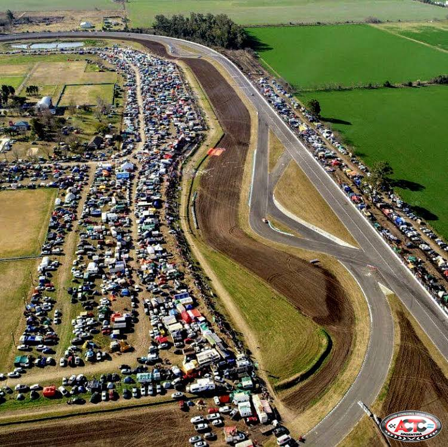

7° Fecha TC - Gran Premio Rafaela
RAFAELA SERÁ MILLONARIA. Se viene la 7ma. fecha del TC, el ganador se llevará $ 8.000.000.-. Lee nuestro resumen completo del evento.
Leer másRAFAELA SERÁ MILLONARIA. Se viene la 7ma. fecha del TC, el ganador se llevará $ 8.000.000.-. Lee nuestro resumen completo del evento.
Leer másUN GAUCHO VELOZ. El de Rivera, con el Ford Mustang, ganó en Concepción del Uruguay. Lee nuestro resumen completo del evento.
Leer más